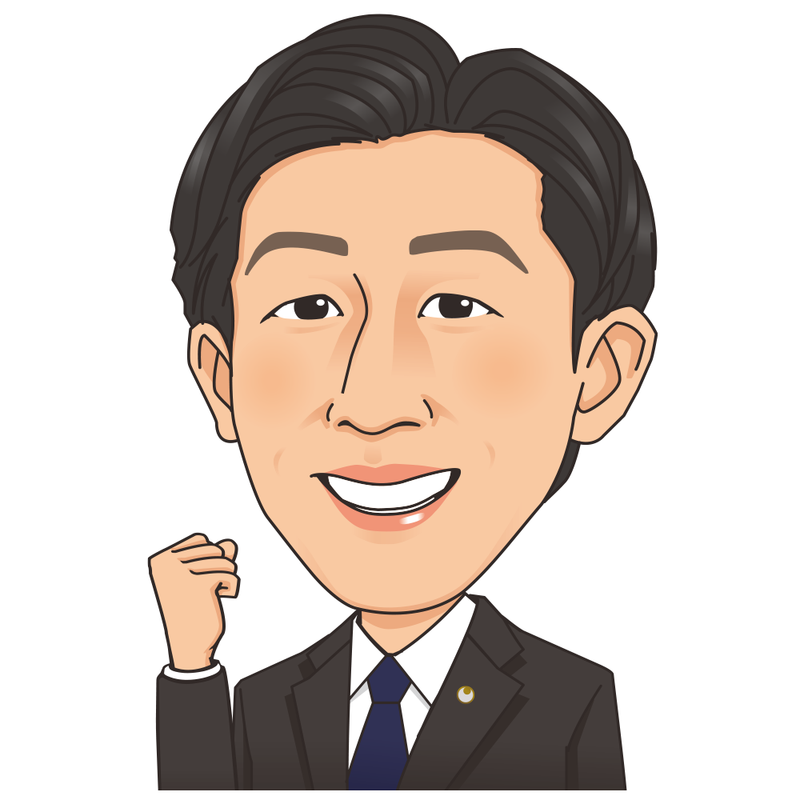
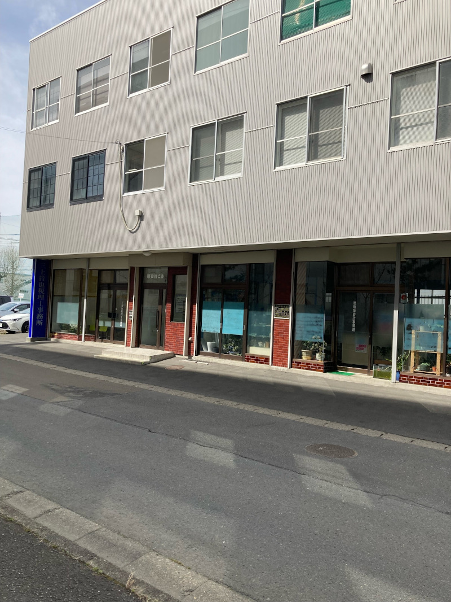
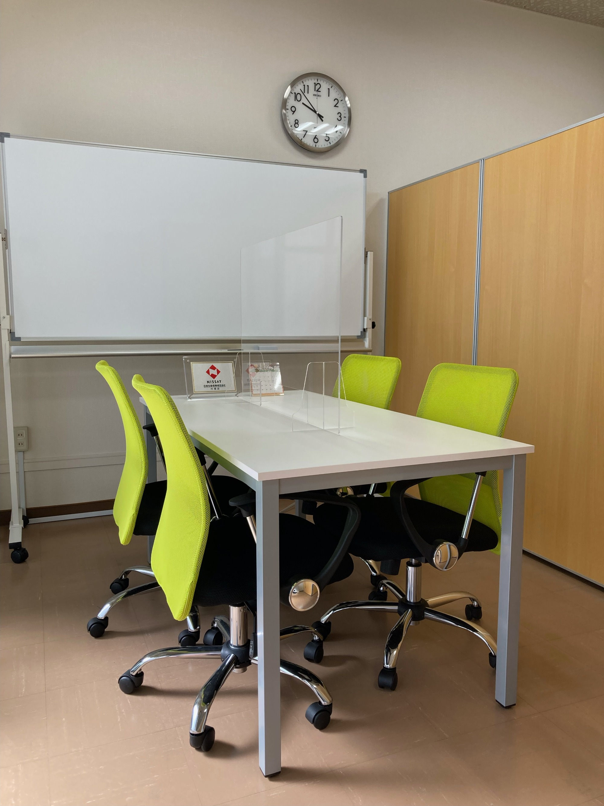

2025.12.12
年末年始の営業予定のご案内
今年も格別のご愛顧にあずかり、ありがとうございました。
当事務所の年末年始の営業予定をご案内します。
〈年末年始の営業予定〉
最終営業日：令和7年12月26日（金）午前8時30分〜午後17時
休業期間 ：令和7年12月27日（土）〜令和8年1月4日（日）
営業開始日：令和8年1月5日（月）午前8時30分〜午後17時
来年も変わらぬご愛顧のほど、よろしくお願いいたします。
気軽に相談できる専門家にお任せ下さい
三上貴也税理士事務所は、巡回監査の実施により、お客様と毎月面談し、会計資料並びに会計記録の適法性、正確性及び適時性を確認します。これにより、経営者の意思決定に役立つデータを提供し、会計、税務や経営面のアドバイスを行います。
この際、経営面のアドバイスでは、毎月の面談等を通して得られるお客様からの情報や『ＴＫＣ経営指標』の同業他社比較等によって、お客様の強みや経営課題等を分析・報告します。

三上貴也税理士事務所は宮城県大崎市古川中里、及びその近隣地域を主な業務エリアとして活動しています。開業以来、創業・独立の支援、税務・会計・決算に関する業務、税務申告書への書面添付、自計化システムの導入支援、経営計画の策定支援、資産譲渡・贈与・相続の事前対策と納税申告書の作成、事業承継対策、税務調査の立会い、保険指導、経営相談等のサービスを提供させていただいております。
当事務所はコミュニケーションを大切にしております。税理士業務はどこに頼んでもそう変りないサービスではとお思いかもしれませんが、実際はお客様とコミュニケーションを通じて支援するのとしないとでは、大きく異なる結果になっているのも事実です。税理士事務所にもいろいろなスタイルがございますので、単なる事務屋として税理士事務所をお探しであれば記帳代行型の税理士事務所をお探しになられるのが賢明かと思います。
税理士事務所の商品は「人」であり、人と人とのコミュニケーションを通じてサポートするビジネスであるため一緒になって考えてくれるワンランク上の税理士事務所をお探しなのであれば、あなたの探している税理士事務所はここにあります。
当事務所は、令和３年９月に開業いたしました。前職の会計事務所勤務時代には数多くの実務経験をさせていただきました。税理士の真の価値は、中小企業の内部事情(財布の中身)を知ることができる職業がゆえに、中小企業の経営に寄り添える存在になれる点です。
私たちの業務は税務・会計だけではなく、お客様とのコミュニケーションを通じて経営全般についても共に悩み、共に喜びを分かち合えるよう願っています。そのため、お客様に最善の選択をしていただけるようなご提案をしていくことが重要だと考えています。
当事務所は、お客様に会社の現状や実態を伝えるために、専門用語を使って説明するのではなく、できるだけわかりやすい言葉と明確な数字を使って対話をすることで、お客様との信頼関係を構築し、常に最高のサービスを提供するよう心がけております。
最先端のノウハウを駆使し、お客様の成長を積極的に支えてまいります。中小企業が継続し、発展していく姿を一番近くで見ることができたのなら、それこそ税理士冥利に尽きると言えます。そして、一生涯のビジネスパートナーとしてかけがえのないお付き合いができることを目指してまいりますので、どうぞよろしくお願い申しあげます。
巡回監査時の当事務所の支援により、経営者は自社の正確な月次損益を把握できるようになります。経営者の意思決定に役立つ情報、黒字決算につながる情報が入手できます。
「ＴＫＣ戦略財務情報システム（ＦＸシリーズ）｣（ｅ21まいスター等を含む）による自計化を支援します。また、継続ＭＡＳシステムを使用した経営計画策定をご支援します。
自計化と経営計画策定に基づく業績管理体制（ＰＤＣＡ）の構築を当事務所が支援します。
三上貴也税理士事務所は、税務・会計・経営助言の専門家として、次の３つとなることを使命とし、関与先企業と税理士業界の発展に貢献します。
ＴＫＣ全国会の基本理念である「自利利他」について、ＴＫＣ全国会創設者飯塚毅は次のように述べています。
大乗仏教の経論には「自利利他」の語が実に頻繁に登場する。解釈にも諸説がある。その中で私は「自利とは利他をいう」（最澄伝教大師伝）と解するのが最も正しいと信ずる。
仏教哲学の精髄は「相即の論理」である。般若心経は「色即是空」と説くが、それは「色」を滅して「空」に至るのではなく、「色そのままに空」であるという真理を表現している。
同様に「自利とは利他をいう」とは、「利他」のまっただ中で「自利」を覚知すること、すなわち「自利即利他」の意味である。他の説のごとく「自利と、利他と」といった並列の関係ではない。
そう解すれば自利の「自」は、単に想念としての自己を指すものではないことが分かるだろう。それは己の主体、すなわち主人公である。
また、利他の「他」もただ他者の意ではない。己の五体はもちろん、眼耳鼻舌身意の「意」さえ含む一切の客体をいう。
世のため人のため、つまり会計人なら、職員や関与先、社会のために精進努力の生活に徹すること、それがそのまま自利すなわち本当の自分の喜びであり幸福なのだ。
そのような心境に立ち至り、かかる本物の人物となって社会と大衆に奉仕することができれば、人は心からの生き甲斐を感じるはずである。
毎月、会計専門家が貴社を訪問し、次の業務を支援します。
当事務所は、毎月専門家である税理士が貴社を訪問し、次の業務を行います。
税理士の４大業務である税務、会計、保証、経営助言を実践
優良な電子帳簿の作成と月次決算体制の構築を支援
TKCシステムを活用し「黒字決算」と「適正申告」を支援
決算書の信頼性を高め、金融機関や取引先からの信頼度アップに貢献
経営革新等支援機関として創業から事業承継までを支援
優良企業を目指して「会計で会社を強くする」取り組みを実践
巡回監査により、経営者は自社の正確な月次損益を把握できるようになり、経営者の意思決定に役立つ情報、業績向上につながる情報を入手できます。
なお、当事務所では、経営管理資料や決算書の信頼性の向上につながる中小会計要領（中小企業のための会計基準）に沿った会計処理をご指導しています。
また、巡回監査時には、会計資料並びに会計記録の適法性、正確性及び適時性を確保するため、会計事実の真実性、実在性、網羅性を確認します。
これらにより、貴社の会計帳簿の証拠力は格段に上がり、税務署及び金融機関等からの信頼度は抜群に高くなります。
「ＴＫＣ戦略財務情報システム（ＦＸシリーズ）｣（ｅ21まいスター等を含む）を使用した自計化を支援します。自計化にあたっては、貴社に納品した日から本稼働するよう、当事務所の担当者がマスターのセットアップを行います。また、貴社の経理担当者が取引の入力に慣れるまで親身に操作指導を行います。
次に業績管理のためには、毎月の目標が必要となります。根拠に基づく実行可能な目標が設定できるよう、継続ＭＡＳシステムを使用した経営計画の策定をご支援します。
毎月の巡回監査時には、予算に対する実績の進捗状況を経営者と一緒に確認します。これらを繰り返すことにより、自計化システムの活用と経営計画策定に基づく業績管理体制（ＰＤＣＡ）の構築を当事務所が支援します。
「自計化システムを導入したが本稼働しない」というケースがあります。なぜでしょうか？経理の選任者がいない、パソコン操作に慣れていない、入力画面で何を入力したらいいかわからない。
当事務所の巡回監査担当者にお任せください。伝票のパソコンへの入力、証憑書類や帳簿の整理等、企業が自から行うべき業務について、その方法を親切に指導いたします。
また、自計化システムを導入することにより、今までの経理業務の二度手間、三度手間を解消できるケースもあります。貴社の経理処理を確認し、最も合理的な経理処理を検討します。
当事務所は、正しい申告と適正な納税を支援することを信条としております。貴社の実情に合った選択可能な方法を、経営者に提案し適法な節税対策を実施します。
また､顧問契約と同時に｢基本約定書」を締結いただき､関与３期目からは､｢税理士法第３３条の２第１項に定める書面添付」を行います。
書面添付制度とは、法律（税理士法第33条の2）に定められている制度で、企業が税務署に提出する税務申告書の内容が正しいことを、税理士が書面に記載し、申告書に添付する制度です。書面添付を行うことにより、申告書の社会的信用力が高まります。
金融機関は中小企業への融資において、決算書データを使用した審査を行います。そのため、その決算書の信頼性について大きな関心を持っています。決算書の信頼性は、当事務所が発行する「記帳適時性証明書」により確認することができます。
「記帳適時性証明書」には、以下の事実が記載されます。
※一定の条件の下、「記帳適時性証明書」を付した企業に対して、融資の金利を優遇する商品があります。
現在、会計事務所のサービスは二極化しています。一つは、税務申告書を作成することを主な目的とした、記帳代行（会計帳簿の作成）を中心とした会計処理だけを行うサービスです。もう一つは、税務申告書の作成はもちろんのこと、経営者がタイムリーに業績を確認できるようにすることを目的とした、黒字決算につながる業績管理体制の構築を支援するサービスです。
前者のサービスを中心とした会計事務所の料金は比較的安価です。しかし、そのサービスだけでは、経済環境が厳しい現在、企業の健全な発展は難しくなります。
当事務所は、前者のサービスは行っていません。企業の発展につながる経営者に役立つ情報の提供が可能な後者のサービスを中心に業務を行っています。
料金ありきで税理士事務所をお探しの方、経理は税理士事務所に任せておけば良いとお考えの方は三上貴也税理士事務所で対応することは出来ませんので、他の税理士事務所をお探しになられることをお薦めさせていただきます。
なお、当事務所とご契約いただき、かつ自計化システムを導入いただいたお客様に限り、無料でホームページの作成を支援します。
料金は、目安なので企業規模や業務量により増減することがあります。

窓からの景色は、四季折々変わり、心を和ませてくれます。

お客様との大事な打合せはこちらで行います。
ＴＫＣ全国会は、租税正義の実現をめざし関与先企業の永続的繁栄に奉仕するわが国最大級の職業会計人集団です。
東北税理士会